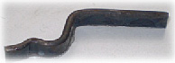
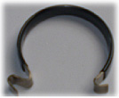

AMS fabrique différents types de ressorts lame :
Lames ressorts
La lame ressort est un type de ressort où l'on utilise la flexibilité du métal pour absober l'énergie mécanique, produire un mouvement, exercer un effort ou un couple dans un système.
Nos lames, pinces et fourchettes ressorts sont utilisées par exemple dans l'industrie automobile ou la serrurerie.
Matière utilisée pour ces ressorts : C65S ou C 75S ou feuillard spécifiques
Nous utilisons différents traitements de surface lors de la fabrication de nos ressorts : delta seal, zingage, cataphorèse qui garantissent la protection contre la corrosion.
Un traitement thermique après fabrication du ressort est impératif pour obtenir une dureté et une fonction conforme aux spécifications.
Pinces ressorts |
Pince ressort |
Fourchette ressort inox |
|  | ||
Lame ressort inox |
Lame ressort C75S pour serrure |
Lames ressorts C75S pour serrure |
 |
 | |
Lames ressorts C75S avec TTH pour appui-tête |
Lames ressorts inox avec thermoformage plastique pour fixation tuyaux |
|
 |
Lame ressort C75S avec TTH et revêtement cataphorèse pour fermeturev porte latérale véhicule utilitaire |
© 2008-2019 AMS (Ateliers Mécaniques de Saucourt) | Mentions légales | Conditions générales
création site